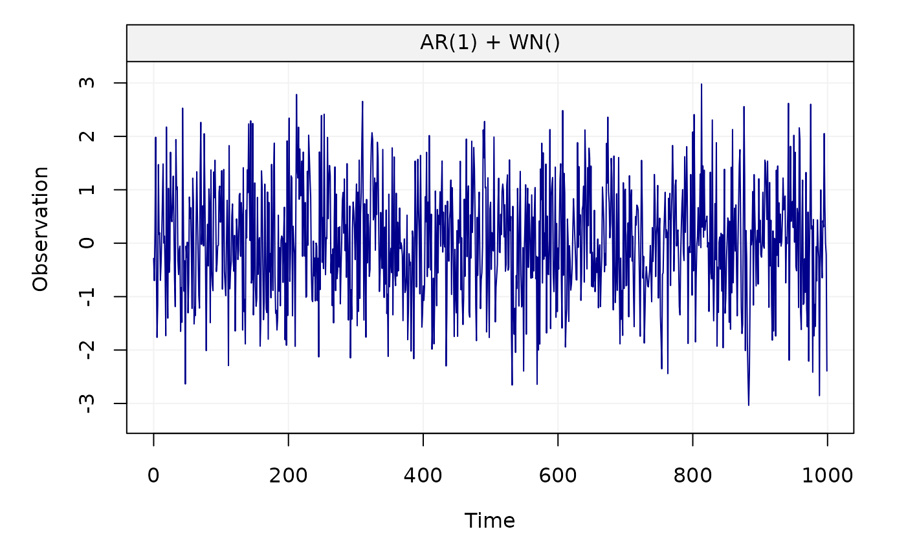

Create a gts object based on a time series model.
gen_gts(n, model, start = 0, end = NULL, freq = 1, unit_ts = NULL, unit_time = NULL, name_ts = NULL, name_time = NULL)
Arguments
| n | An |
|---|---|
| model | A |
| start | A |
| end | A |
| freq | A |
| unit_ts | A |
| unit_time | A |
| name_ts | A |
| name_time | A |
Value
A gts object
Details
This function accepts either a ts.model object (e.g. AR1(phi = .3, sigma2 =1) + WN(sigma2 = 1)) or a simts object.
Examples
# Set seed for reproducibility set.seed(1336) n = 1000 # AR1 + WN model = AR1(phi = .5, sigma2 = .1) + WN(sigma2=1) x = gen_gts(n, model) plot(x)# Reset seed set.seed(1336) # GM + WN # Convert from AR1 to GM values m = ar1_to_gm(c(.5,.1),10) # Beta = 6.9314718, Sigma2_gm = 0.1333333 model = GM(beta = m[1], sigma2_gm = m[2]) + WN(sigma2=1) x2 = gen_gts(n, model, freq = 10, unit_time = 'sec') plot(x2)# Same time series all.equal(x, x2, check.attributes = FALSE)#> [1] TRUE